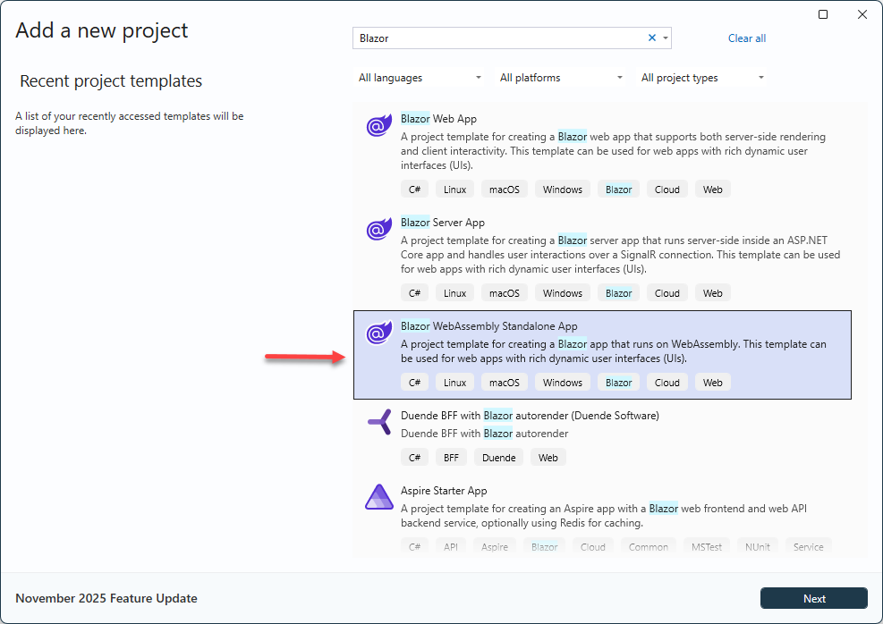
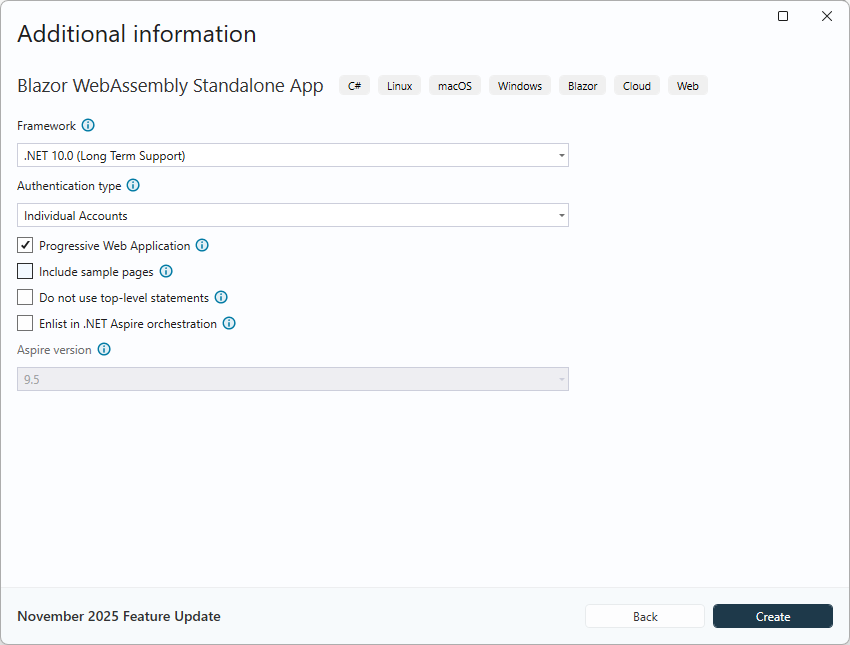

Blazor WebAssembly App
Create App
Create a new Blazor WebAssembly App in Visual Studio
To prepare for later user management, choose Individual Accounts.


Install RecroGrid Framework Blazor UI
RecroGrid Framework Blazor UI is distributed as the 
Install the package using .NET CLI or Package Manager
dotnet add package Recrovit.RecroGridFramework.Client.Blazor.UI
Install-Package Recrovit.RecroGridFramework.Client.Blazor.UI
Remove the Bootstrap reference from index.html if it contains it
<link href="css/bootstrap/bootstrap.min.css" rel="stylesheet" />
Register RecroGrid Framework Services
Open ~/Program.cs file and register the RecroGrid Framework Blazor UI Services in the client web app.
using Microsoft.AspNetCore.Components.Web;
using Microsoft.AspNetCore.Components.WebAssembly.Hosting;
using Recrovit.RecroGridFramework.Client.Blazor;
using Recrovit.RecroGridFramework.Client.Blazor.UI;
var builder = WebAssemblyHostBuilder.CreateDefault(args);
builder.RootComponents.Add<App>("#app");
builder.RootComponents.Add<HeadOutlet>("head::after");
builder.Services.AddScoped(sp => new HttpClient { BaseAddress = new Uri(builder.HostEnvironment.BaseAddress) });
builder.Services.AddOidcAuthentication(options =>
{
// Configure your authentication provider options here.
// For more information, see https://aka.ms/blazor-standalone-auth
builder.Configuration.Bind("Local", options.ProviderOptions);
});
//await builder.Build().RunAsync();
var loggerFactory = builder.Services.BuildServiceProvider().GetRequiredService<ILoggerFactory>();
var logger = loggerFactory.CreateLogger<Program>();
builder.Services.AddRgfBlazorWasmBearerServices(builder.Configuration, logger);
var host = builder.Build();
await host.Services.InitializeRgfBlazorAsync();
await host.Services.InitializeRgfUIAsync();
await host.RunAsync();
Init Router
<Router AppAssembly="@typeof(App).Assembly" NotFoundPage="typeof(Pages.NotFound)"
AdditionalAssemblies="new[] { typeof(Recrovit.RecroGridFramework.Client.Blazor.Components.RgfEntityComponent).Assembly }">
<Found Context="routeData">
<RouteView RouteData="@routeData" DefaultLayout="@typeof(MainLayout)" />
<FocusOnNavigate RouteData="@routeData" Selector="h1" />
</Found>
</Router>
Imports
Open ~/_Imports.razor file and import the RecroGrid Framework Blazor UI namespaces.
@using Recrovit.RecroGridFramework.Client.Blazor.Parameters
@using Recrovit.RecroGridFramework.Client.Blazor.UI
@using Recrovit.RecroGridFramework.Client.Blazor.UI.Components
MainLayout
Layout/MainLayout.razor
@inherits LayoutComponentBase
<RgfRootComponent>
<header class="rgf-page-header">
<div class="rgf-navbar-host">
<NavbarComponent MenuParameters="@(new RgfMenuParameters() { MenuId = 10001 })"
NavbarBreakpoint="lg"
BrandText="RGF Demo App"
ShowThemeSelector="true"
ShowLanguageSelector="true">
<NavbarRightContent>
<div class="login-display">
<LoginDisplay />
</div>
</NavbarRightContent>
</NavbarComponent>
</div>
</header>
<main class="rgf-page-main">
@Body
</main>
</RgfRootComponent>
API access
wwwroot/appsettings.json
"Recrovit": {
"RecroGridFramework": {
"API": {
"BaseAddress": "https://{API-DOMAIN}" //e.g. "https://localhost:11913" or "http://api.example.com"
}
}
}
Set the client address in the API's appsettings.json